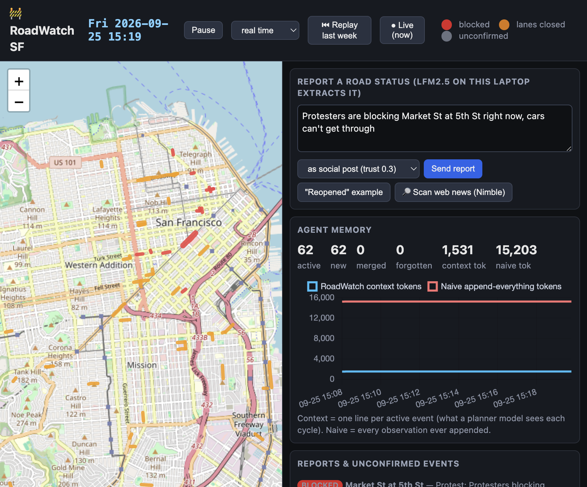
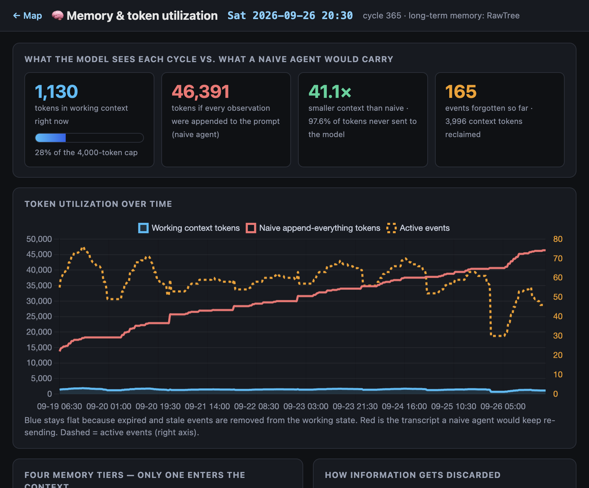
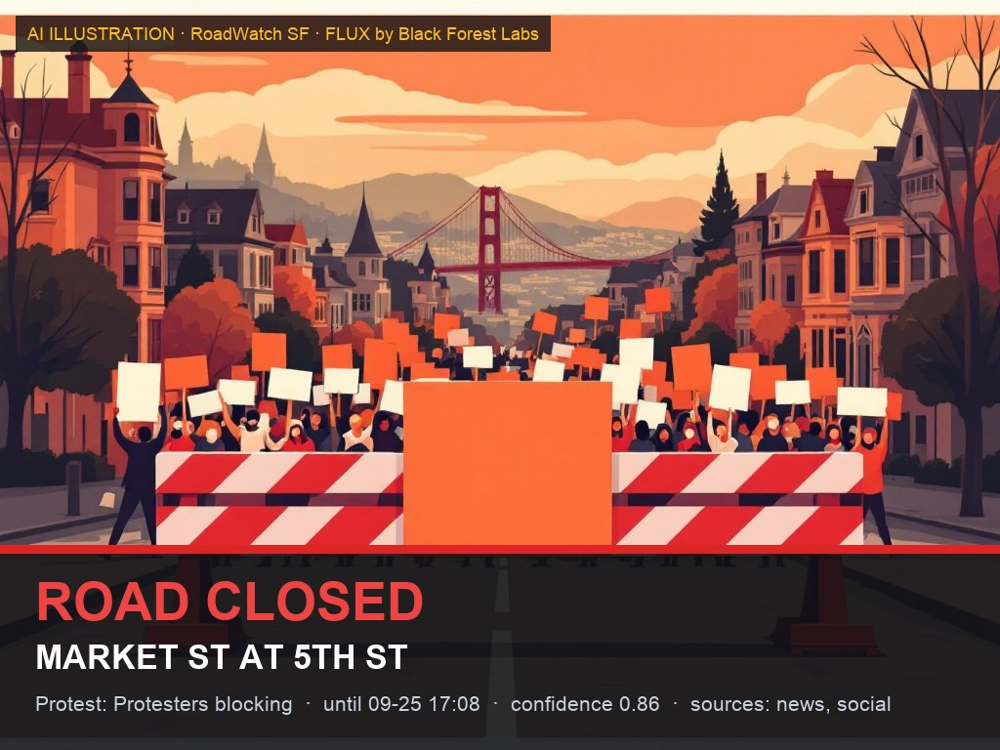
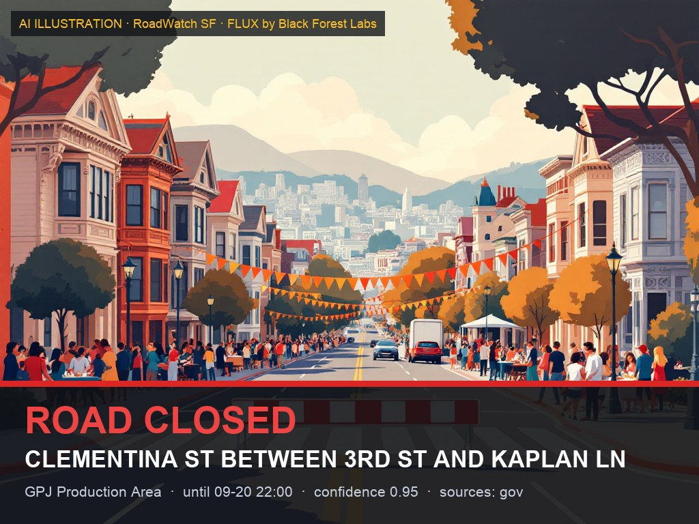

A self-maintaining agent that knows what's actually happening on the streets — and stays sharp for days because it forgets what no longer matters.
On-device Liquid AI LFM2.5 · Nimble · RawTree · FLUX
Information exists. It's fragmented across sources, updated at different times, and contradicts itself. You end up with information, not an answer.
Verity gives you one evolving view: what is happening, where, whether cars still get through, until when — and why it believes that.
Every event carries its claims: sources, when they were seen, and the current state of the evidence — unconfirmed corroborated verified cleared
Long-horizon agents break down as observations pile up: slower, costlier, less reliable. Road status is the perfect test — most road events expire. A farmers market ends at 2 pm. A parade clears. A flood recedes.
So Verity's core isn't scraping. It's an agent that remembers active events, forgets expired ones, and keeps its context small no matter how long it runs.

Official closures feed, live web search for news & social, user reports.
Nimble · DataSFFree text → event JSON in ~3 s, on the laptop. No article stays in context.
Liquid AI LFM2.5Geocode to real street segments. Same block → merge sources, combine confidence.
Deterministic codeA lone social post triggers an independent web check. Evidence → confidence up. Silence → decay.
NimbleRetire expired events, decay stale rumors, compact over-cap state into one-line digests.
Explicit rulesMap, ledger, and a shareable alert card for confirmed closures.
RawTree · FLUXLLMs interpret. Code enforces. The model proposes claims; deterministic rules decide what enters the world state, what gets merged, and what gets forgotten.
| Tier | Holds | Lives in | In context? |
|---|---|---|---|
| 0 · Raw observations | Every page, post, feed row — hashed for dedup | RawTree | Never |
| 1 · Event ledger | Every version of every event: status, confidence, sources | RawTree | Only via SQL |
| 2 · Digests | One line per retired event | RawTree | Only when recalled |
| 3 · Working state | Active events, one line each | Rendered each cycle | Always · capped ≈ 4K tokens |
Recall is a SQL query, not context: “Has Market St closed like this before?”
Hash the text. Seen before → dropped before it costs a token.
sha1 → newLFM2.5 → {street, cross, blocked}. The article never enters state; one 25-token line does.
conf 0.30 · unconfirmedNews page found. Same block → merge sources: 1 − (1−0.3)(1−0.8)
conf 0.86 · active“Reopened” from a trusted source → event cleared; a one-line digest is written, the version history stays in the ledger.
→ digest, clearedStill social-only? Confidence drops 0.15 every hour: 0.30 → 0.15 → dropped below 0.20.
forgotten in ~1 hPrior credibility per source kind. Combined as independent evidence, never averaged.
Below it: grey, dashed, “unconfirmed”. At or above: shown as active, eligible for an alert card.
Scheduled closures leave the working state 30 min after ends_at — grace for late clean-up.
Unconfirmed social reports lose confidence each simulated hour they go uncorroborated.
Decayed past this → retired with reason “unconfirmed social report decayed”.
Hard ceiling on working state. Over it, the lowest severity × confidence events are folded into digests first.
Nothing is ever deleted: every create / merge / verify / retire is a row in RawTree with its reason. Only the context forgets.

gov 0.95 · news 0.80 · social 0.30
Independent sources combine: 1 − Π(1 − wᵢ). One tweet is a rumor. A tweet plus a news page is 0.86.
An event shows as active only at ≥ 0.70. Below that it's drawn dashed and grey — visible, but honest about being unconfirmed.
No corroboration? Confidence decays every cycle until the rumor is dropped and written to a digest. No silent overwrite; every change is a ledger row with a reason.
[Fri 15:07] + NEW ? Parade: huge parade blocking traffic on Market St between 5th St and 8th St (conf 0.3)
[Fri 15:07] ✓ VERIFIED Market St via Nimble (5 matching pages) → conf 0.86
[Fri 15:07] 🖼 FLUX alert card ready for Market St between 5th St and 8th St
[Sat 20:00] − FORGET Jack Kerouac - Vesuvio 2026 — ended 09-20 19:00Live web search for news and social; independent verification of single-source rumors.
Runs inside the agent process on a MacBook GPU. Turns any text into event JSON in ~3 s. No API, no server, no article in context.
Schemaless JSON ingest, SQL over HTTP. Observations, the full event ledger, digests and per-cycle agent metrics. Recall is a query.
A shareable alert card per confirmed closure, labeled as an illustration. Never a fake photo of a real incident.
Plus DataSF Temporary Street Closures & street centerlines for ground truth and geocoding. Adding a city means adding sources, not changing the agent.


Floods were the example. The same agent handles crashes, construction, parades, protests, strikes — anything that temporarily changes the world around you.